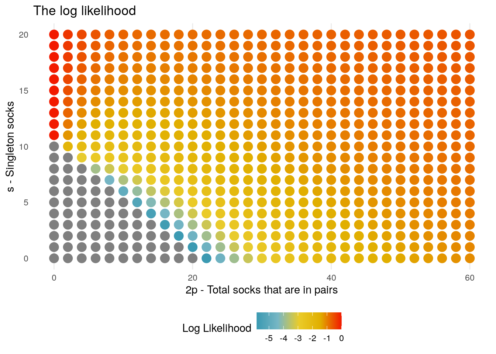

Our model has two unknown parameters: \(p\) the number of pairs of socks, and \(s\) the number of singleton socks in the wash. There are in total \(n = 2p + s\) socks.
We have a single piece of data: that the first \(k\) socks are distinct; In the case of Broman’s tweet: \(k = 11\). We denote the likelihood for parameters \(p,s\) given \(k\) by \(L(p,s|k)\).
Claim \[L(p,s|k) = \begin{cases} \binom{2p + s}{k}^{-1} \sum_{j=0}^k 2^{k-j} \binom{s}{j} \binom{p}{k-j} & \text{if } k \leq p + s, \\ 0 & \text{else.} \end{cases} \]
We proceed to sketch the derivation of this formula, you can skip to the next section without any impact on the remaining text.
Sketch Proof
The likelihood for the sock problem can be identified as the proportion of all ways of choosing \(k\) socks from \(p\) pairs and \(s\) singletons, for which the \(k\) socks are distinct.
As a starting point, note that if \(k > p + s\) then it is impossible for us to have \(k\) different socks, so the below considers the case \(0 \leq k \leq p + s\).
The denominator is the total number of ways to choose \(k\) socks from a total of \(2p+s\), without replacement. This is known to be given by the binomial coefficient
\[\binom{2p + s}{k}\]
To calculate the numerator, the number of ways to choose \(k\) distinct socks, we first condition on the number \(j\) that are singletons. That is: we ask for the number of ways to choose \(j\) of the \(s\) singletons, and \((k-j)\) distinct socks from the pairs.
The first of the two is again simply the binomial coefficient \(\binom{s}{j}\); for the later we note that there are \(p\) distinct types of socks in the pairs and we want \((k-j)\) distinct types, which is \(\binom{p}{k-j}\). But since for each type there were two possible socks to choose from, we need to multiply this by \(2^{k-j}\).
Combining the above, and summing over the possible values \(0 \leq j \leq k\) we have
\[ \sum_{j=0}^k 2^{k-j}\binom{s}{j}\binom{p}{k-j}.\]
Deriving combinatorial expressions can be particularly prone to errors, so we will want to carry out some sanity checks to ensure the formula above feels right.
In the case of small values of \(k,p,s\) it is possible to list all the possible combinations by hand: from which we can check the formula.
Consider the case where \(p = 1, s = 1\) for a total of \(5\) socks. Let’s denote the socks \(S, P_1, P_2\) where \(S\) is the singleton sock and \(P_1,P_2\) make a pair.
Supposing \(k = 2\), the possible combinations we could observe are: \(\{S,P_1\}, \{S, P_2\}, \{P_1, P_2\}\), and of these three possibilities, in two of them we have distinct socks.
Evaluating the likelihood, we note that the denominator is \(\binom{3}{2} = 3\), whilst the numerator is:
\[ 2\binom{1}{1}\binom{1}{1} = 1,\] so our formula agrees.
Adding even a few extra socks quickly produces formulae which would be laborious to check by hand. Instead we can turn to a sampling approach to see whether the figures are consistent.
For checking larger problems, we can (soft) validate our formula by drawing random samples and comparing the frequency of samples which satisfy the condition of all socks being distinct.
We consider the case \(p = 3, s = 4\) for a total of \(n = 10\) socks, and we consider \(k = 4\). This time our formula indicates that there are a total of \(\binom{10}{4} = 210\) different combinations, of which the number we calculate as having \(4\) distinct socks is:
\[2^{3}\binom{4}{1}\binom{3}{3} + 2^{2}\binom{4}{2}\binom{3}{2} + 2^{1}\binom{4}{3}\binom{3}{1} + 2^{0}\binom{4}{4}\binom{3}{0} = 129\] so that the probability of drawing \(4\) distinct socks is \(129/210 \approx 0.61\).
We now validate this calculation by sampling directly from the possible combinations:
library(tidyverse)
library(knitr)
p <- 3
s <- 4
k <- 4
W = c(rep(paste0("P",1:p), 2), paste0("S", 1:s))
df <- tibble(sample_id = 1:100000) %>%
mutate(
# each draw is a sample of k elements from W.
draw = pmap(., ~sample(W, k, replace = FALSE)),
# the number of distinct elements in the draw
diff = map(draw, ~length(unique(.))) %>% unlist
)
df %>%
summarise(
n = n(),
k_distinct = sum(diff == k),
prop_k_distinct = k_distinct/n
) %>%
kable()| n | k_distinct | prop_k_distinct |
|---|---|---|
| 1e+05 | 61299 | 0.61299 |
Before moving to performing calculations with the likeilhood, we briefly comment on its implementation in R.
For a start, it is common in calculations to work instead with the log likelihood. This is beneficial for computational reasons, where multiplication of large numbers often leads to calculations that are outside of the scale of the machine precision.
Let \(l(n,m) = \log \binom{n}{m}\), then we can write the logarithm of each term in the summation as:
\(f(p,s|k) = (k-j) \log(2) + l(s,j) + l(p,k-j) - l(2p + s, k),\)
from which we can retrieve the log likelihood by computing
\[\log L(p,s|k) = \log \left( \sum_{j=0}^k \exp \bigg( f(p,s|k) \bigg) \right)\] In the above we see that we still have to exponentiate the terms at some point - and this may still produce calculation issues for extreme values of \(f(p,s|k)\). To avoid this, we make use of the LogSumExp trick: let \(f^*\) denote the largest value taken by \(f(p,s|k)\) over the parameter values \(p,s\)
\(f^* = \max_{p,s} f(p,s|k),\)
then the trick is to note the formaula above is equivalent to
\[\log L(p,s|k) = f^* + \log \left( \sum_{j=0}^k \exp \bigg( f(p,s|k) - f^* \bigg) \right).\]
Note that since \(f^*\) is on the log scale, although it may be the largest term it will still be computationally tractable. Each term to be exponentiated is now guaranteed to be less than \(1\), and so within machine precision.
log_likelihood <- function(p,s,k){
if(k > p + s) return(-Inf)
f <- purrr::map(0:k, function(j){
(k-j)*log(2) + lchoose(s,j) +lchoose(p,k-j) - lchoose(2*p + s,k)
})
lL <- matrixStats::logSumExp(f)
return(lL)
}And to test that our function returns the values we expect:
# test same values as in computational example
lL <- log_likelihood(p = 3, s=4, k = 4)
exp(lL)## [1] 0.6142857Whilst the purpose of this note is to consider a Bayesian analysis, first computing the Maximum Likelihood Estimate (MLE) gives us an opportunity to separate some of the initial computational aspects, from Bayesian specifics we will encounter further on.
The MLE is as described - we take a point estimate that the parameters \((p,s)\) that were most likely to generate the observed data \(k\) are given by the values \(p,s\) which maximise the (log) likelihood.
Computationally we cannot enumerate all possible combinations of \(p,s\), however we can reasonably assume that they fall within a reasonable range, and then only look for the maximum of the log-likelihood on this range.
Given the values \(k = 11\), we choose to search on the range \(0 \leq p,s \leq 50\), which ranges from a minimum of \(0\) socks, up to a maximum of \(150\) (50 pairs, and 50 singletons).
We define a data frame which will enumerate all possible pairs of \(p,s\) on this range; this is facilitated using the crossing function from tidyr.
socks <- tidyr::crossing(p = 0:40, s = 0:20) %>%
mutate(
n = 2*p + s,
k = 11
)The log-likelihood of each pair \(p,s\) can now be computed; since the function is not vectorised, we will need to use the rowwise function before calling mutate.
socks <- socks %>%
dplyr::rowwise() %>%
dplyr::mutate(
log_likelihood = log_likelihood(p,s,k)
)In the below we plot how the log-likelihood, for clariftywe restrict the plot to a reduced range of parameter values
library(wesanderson)
ggplot(socks) +
geom_point( aes(2*p, s, color = log_likelihood), size = 4) +
scale_color_gradientn(colours = wes_palette("Zissou1", 1000, type = "continuous")) +
coord_cartesian(xlim = c(0,60), ylim = c(0,20)) +
xlab("2p - Total socks that are in pairs") + ylab("s - Singleton socks") +
ggtitle("The Log Likelihood")
To maximise the likelihood we would look to find the single point with the largest (closest to 0) log-likelihood, however the plot above indicates that such a point may not exist.
In fact this is entirely to be expected: take for example any scenario in which \(p = 0\), and \(s \geq 11\),then in all these cases the probability of observing \(11\) distinct socks is \(1\) - meaning that we have an entire range of parameter values that are all equally likely to have generated the data.
Other points to note in the graph are:
For combinations which have \(n =2p + s \leq 11\), the log likelihood is \(-\infty\), which are the points showing in grey.
More generally than the case of all socks being singletons, for any value \(s\) the log likelihood grows as \(p\) increases. This again matches expectations that the more different socks you have - the more likely you are to have drawn distinct socks.
In all we see that maximum likelihood estimation will not help us to solve this particular problem! If we want to derive reasonable estimates for how many socks Karl Broman washed - we will need to bring in some knowledge (assumptions) about how people do their washing. And to do that, we will need to become Bayesians.